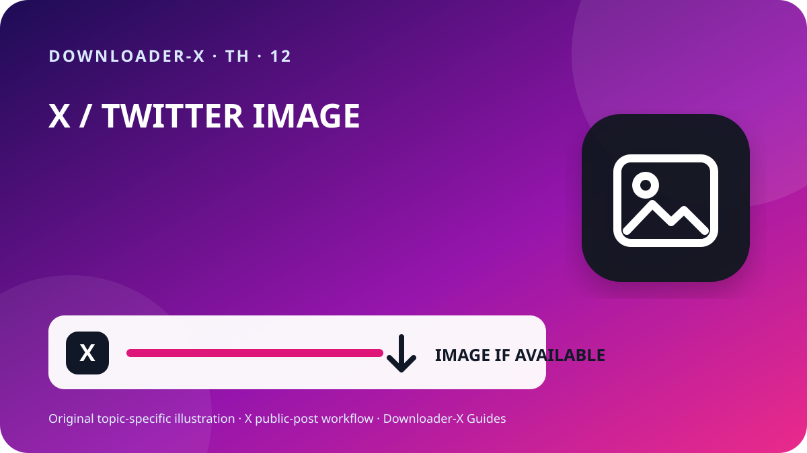

คำตอบแบบสั้น
ดาวน์โหลดรูปภาพทวิตเตอร์ความละเอียดสูง — เปิดโพสต์ X ที่มีวิดีโอและตรวจว่าเป็นโพสต์สาธารณะ จากนั้นกดแชร์แล้วเลือกคัดลอกลิงก์โพสต์ วางลิงก์นั้นใน Downloader-X เลือกไฟล์ MP4 ที่แสดงจริง และเปิดไฟล์หลังบันทึกเพื่อตรวจทั้งภาพและเสียง วิธีนี้ควรใช้กับวิดีโอของคุณเอง สื่อที่มีใบอนุญาต หรือสื่อที่เจ้าของอนุญาตให้เก็บเท่านั้น อย่ากรอกรหัสผ่าน X รหัสยืนยัน คุกกี้ หรือข้อมูลบัญชีลงในเว็บดาวน์โหลด

3 ขั้นตอนด้วย Downloader-X
- ลิงก์ที่ดีควรชี้ไปยังโพสต์เดียวที่มีวิดีโอ กดเมนูแชร์ของ X แล้วเลือกคัดลอกลิงก์โพสต์ จากนั้นวางในแท็บใหม่หนึ่งครั้งเพื่อตรวจปลายทาง การตรวจนี้ช่วยแยกปัญหาลิงก์ผิดออกจากปัญหาระบบดาวน์โหลด และลดการกดซ้ำที่อาจสร้างไฟล์ไม่สมบูรณ์หลายรายการ
- วางลิงก์ที่ตรวจแล้วลงในหน้า X Downloader และเริ่มประมวลผลเพียงครั้งเดียว รอให้ระบบแสดงตัวเลือกจริง แล้วตรวจชื่อโพสต์หรือภาพตัวอย่างก่อนกดดาวน์โหลด หากผลลัพธ์เป็นคนละโพสต์ให้ย้อนกลับไปคัดลอกใหม่ อย่าเชื่อปุ่มที่สัญญา 4K, 1080p หรือไม่มีลายน้ำเมื่อแหล่งต้นทางไม่ได้ส่งตัวเลือกนั้น ระบบที่ถูกต้องควรแจ้งข้อผิดพลาดตรงไปตรงมา ไม่ควรส่งหน้า HTML โปรแกรมติดตั้ง หรือไฟล์ปลอมมาแทนวิดีโอแล้วแสดงว่าสำเร็จ
- การดาวน์โหลดเสร็จเมื่อได้วิดีโอที่เปิดเล่นได้จริง ไม่ใช่แค่เมื่อแถบดาวน์โหลดหายไป ตรวจรายละเอียดต่อไปนี้ก่อนเก็บหรือส่งต่อไฟล์
คำค้นหานี้หมายถึงอะไร
ดาวน์โหลดรูปภาพทวิตเตอร์ความละเอียดสูง. รองรับเฉพาะโพสต์สาธารณะ รูปแบบและคุณภาพขึ้นอยู่กับตัวเลือกจริงจากต้นทาง
1. ตรวจว่าโพสต์เป็นสาธารณะและคุณมีสิทธิ์ใช้งาน
เริ่มจากหน้าโพสต์ต้นฉบับ ไม่ใช่หน้าโปรไฟล์ หน้าค้นหา หรือภาพตัวอย่างที่ส่งต่อมา เปิดลิงก์ในแท็บใหม่และเปรียบเทียบชื่อบัญชี ข้อความ ภาพปก และความยาววิดีโอให้ตรงกัน โพสต์สาธารณะหมายถึงผู้ชมทั่วไปสามารถเปิดดูตามการตั้งค่าปัจจุบัน แต่ไม่ได้หมายความว่าสามารถนำไปโพสต์ซ้ำ ตัดต่อ ขาย หรือใช้โฆษณาได้โดยอัตโนมัติ หากเป็นบัญชีป้องกัน โพสต์ถูกลบ ต้องเข้าสู่ระบบเฉพาะ หรือถูกจำกัดพื้นที่ ให้หยุดและขอไฟล์จากเจ้าของแทนการพยายามข้ามข้อจำกัด
การมองเห็นแบบสาธารณะเป็นเพียงการตั้งค่าการเข้าถึง ไม่ใช่ใบอนุญาตใช้งาน เก็บวิดีโอเฉพาะของคุณเอง สื่อที่มีใบอนุญาตเหมาะสม หรือสื่อที่ได้รับอนุญาตชัดเจน หากต้องนำไปเผยแพร่ ตัดต่อ หรือใช้เชิงพาณิชย์ ให้ตรวจเงื่อนไขเพิ่มเติมและเก็บหลักฐานเป็นลายลักษณ์อักษร ระวังข้อมูลส่วนตัว สถานที่ส่วนตัว และบุคคลที่ปรากฏในคลิป โดยเฉพาะเด็กและเยาวชน และอย่าแสดงผลงานของผู้อื่นว่าเป็นของคุณ
2. คัดลอกลิงก์ของโพสต์ให้ถูกต้อง
ลิงก์ที่ดีควรชี้ไปยังโพสต์เดียวที่มีวิดีโอ กดเมนูแชร์ของ X แล้วเลือกคัดลอกลิงก์โพสต์ จากนั้นวางในแท็บใหม่หนึ่งครั้งเพื่อตรวจปลายทาง การตรวจนี้ช่วยแยกปัญหาลิงก์ผิดออกจากปัญหาระบบดาวน์โหลด และลดการกดซ้ำที่อาจสร้างไฟล์ไม่สมบูรณ์หลายรายการ
เปิดโพสต์วิดีโอต้นฉบับและแตะวันที่หรือพื้นที่โพสต์เพื่อเข้าสู่หน้ารายการเดียว
กดแชร์แล้วเลือกคัดลอกลิงก์โพสต์ แทนการพิมพ์ URL เอง
ตรวจว่าโดเมนเป็น x.com หรือ twitter.com และมีรหัสสถานะของโพสต์
เปิดลิงก์ในแท็บใหม่แล้วตรวจว่าบัญชี ข้อความ และวิดีโอตรงกับต้นฉบับ
เก็บ URL ต้นทางและหลักฐานสิทธิ์ไว้คู่กับไฟล์ที่ดาวน์โหลด
ตรวจต้นทางก่อนเก็บไฟล์ระยะยาว
สำหรับงานหลายคลิป ให้จดชื่อบัญชี วันที่โพสต์ URL ถาวร หัวข้อสั้น คุณภาพที่เลือก ขนาดไฟล์ และเหตุผลที่คุณมีสิทธิ์เก็บไว้ การบันทึกข้อมูลนี้ช่วยป้องกันไฟล์หลงที่ไม่ทราบที่มา และทำให้ตรวจเครดิตหรือเงื่อนไขใบอนุญาตภายหลังได้ง่าย หากโพสต์อ้างคำพูดหรือเป็นเธรด ให้แน่ใจว่าคุณคัดลอก URL ของโพสต์ที่เป็นเจ้าของวิดีโอจริง ไม่ใช่ URL ของโพสต์ที่เพียงนำไปอ้างถึง
4. เลือก HD ตามแหล่งต้นทางและอุปกรณ์
คำว่า HD ต้องอ้างอิงตัวเลือกที่ระบบได้รับจากโพสต์จริง ไม่ใช่ตัวเลขที่ใส่เพิ่มเพื่อการตลาด 720p มักสมดุลระหว่างความคมชัด ขนาดไฟล์ และการใช้งานบนมือถือ ส่วน 1080p เหมาะกับจอใหญ่เมื่อแหล่งต้นทางมีให้จริง ความละเอียดเท่ากันอาจมีบิตเรต โค้ดेक และคุณภาพต่างกัน จึงควรเปิดไฟล์ตรวจ ไม่ตัดสินจากชื่อไฟล์อย่างเดียว หากต้องการเสียง ให้เลือกตัวเลือกที่ระบุว่ารวมวิดีโอและเสียง หรือทดสอบทันทีหลังบันทึก เพราะบางแหล่งแยกภาพกับเสียงในคุณภาพสูง
6. ตรวจไฟล์หลังดาวน์โหลด
การดาวน์โหลดเสร็จเมื่อได้วิดีโอที่เปิดเล่นได้จริง ไม่ใช่แค่เมื่อแถบดาวน์โหลดหายไป ตรวจรายละเอียดต่อไปนี้ก่อนเก็บหรือส่งต่อไฟล์
ชนิดไฟล์ตรงกับวิดีโอที่เลือก เช่น MP4 และไม่ใช่ HTML หรือโปรแกรมติดตั้ง
ขนาดไฟล์ไม่เป็นศูนย์และสมเหตุสมผลกับระยะเวลาและคุณภาพ
เปิดช่วงต้น กลาง และท้ายเพื่อตรวจภาพ ความยาว และเสียง
ชื่อไฟล์ โฟลเดอร์ URL ต้นทาง และข้อมูลการอนุญาตถูกเก็บอย่างเป็นระเบียบ
ความปลอดภัยและความเป็นส่วนตัว
ขั้นตอนสำหรับโพสต์สาธารณะไม่ควรต้องใช้รหัสผ่าน X รหัสยืนยันสองชั้น การส่งออกคุกกี้ การควบคุมคอมพิวเตอร์ระยะไกล หรือการปิดระบบป้องกันเครื่อง หยุดทันทีหากเว็บไซต์ให้ดาวน์โหลดไฟล์ .exe, .dmg หรือส่วนขยายเบราว์เซอร์ที่ไม่เกี่ยวข้องกับวิดีโอ ตรวจโดเมนและชนิดไฟล์ก่อนเปิดทุกครั้ง บนอุปกรณ์ที่ใช้ร่วมกันควรย้ายไฟล์ที่ได้รับอนุญาตออกจากโฟลเดอร์สาธารณะและลบสำเนาชั่วคราวที่ไม่จำเป็น
5. บันทึกไฟล์บน iPhone, Android และคอมพิวเตอร์
บน iPhone หรือ iPad ไฟล์จาก Safari มักอยู่ในแอป Files ภายใต้ Downloads หรือตำแหน่งที่ตั้งไว้ บน Android ให้ดูในรายการดาวน์โหลดของเบราว์เซอร์หรือแอป Files ส่วน Windows, macOS, Linux และ ChromeOS ให้ตรวจโฟลเดอร์ Downloads และประวัติการดาวน์โหลดของเบราว์เซอร์ ก่อนกดซ้ำควรดูว่าไฟล์ถูกบันทึกแล้วหรือยัง หากพื้นที่เก็บข้อมูลไม่พอ ให้ลบไฟล์ที่ไม่จำเป็นหรือเลือกคุณภาพต่ำลง อย่าติดตั้งแอปจัดการดาวน์โหลดที่ไม่รู้จักเพียงเพราะหน้าเว็บบังคับให้ติดตั้ง
แก้ปัญหาแบบไล่จากต้นทางไปยังไฟล์
กลับไปยังโพสต์วิดีโอแล้วใช้ปุ่มแชร์ โปรไฟล์มีหลายโพสต์จึงไม่ระบุสื่อที่ต้องการ
อาจเป็นโพสต์ป้องกันหรือมีข้อจำกัด อย่าแชร์รหัสผ่านหรือคุกกี้ ให้ขอไฟล์จากเจ้าของ
ตรวจว่าโพสต์ยังอยู่ มีวิดีโอแบบเนทีฟ และ URL เปิดได้จริง จากนั้นรีเฟรชหนึ่งครั้ง
ลบไฟล์นั้น ห้ามเปลี่ยนนามสกุล แล้วคัดลอกลิงก์ใหม่และเลือกตัวเลือกวิดีโอที่ระบบแสดงจริง
ตรวจต้นฉบับ ระดับเสียง และเครื่องเล่นอื่น หากเลือกแบบวิดีโออย่างเดียว ให้เลือกไฟล์รวมเสียงเมื่อมีให้
จัดระเบียบเพื่อไม่ให้ไฟล์ซ้ำและไม่เสียพื้นที่
ตั้งชื่อไฟล์ด้วยหัวข้อสั้น ชื่อบัญชี วันที่ และคุณภาพ เช่น topic_creator_2026-08-30_720p.mp4 เก็บไฟล์ที่ตรวจแล้วในโฟลเดอร์โครงการและแยกจากไฟล์ชั่วคราว เมื่อยืนยันว่าไฟล์สมบูรณ์แล้วให้เก็บเฉพาะคุณภาพที่จำเป็น การกดหลายครั้งไม่ได้เพิ่มความคมชัดและอาจสร้างไฟล์ชื่อซ้ำ สำรองข้อมูลเฉพาะงานที่ต้องใช้ และรักษา URL ต้นทางกับเงื่อนไขเครดิตไว้ในไฟล์ข้อความหรือสเปรดชีตเดียวกัน
3. วางลิงก์และเลือกผลลัพธ์ที่มีอยู่จริง
วางลิงก์ที่ตรวจแล้วลงในหน้า X Downloader และเริ่มประมวลผลเพียงครั้งเดียว รอให้ระบบแสดงตัวเลือกจริง แล้วตรวจชื่อโพสต์หรือภาพตัวอย่างก่อนกดดาวน์โหลด หากผลลัพธ์เป็นคนละโพสต์ให้ย้อนกลับไปคัดลอกใหม่ อย่าเชื่อปุ่มที่สัญญา 4K, 1080p หรือไม่มีลายน้ำเมื่อแหล่งต้นทางไม่ได้ส่งตัวเลือกนั้น ระบบที่ถูกต้องควรแจ้งข้อผิดพลาดตรงไปตรงมา ไม่ควรส่งหน้า HTML โปรแกรมติดตั้ง หรือไฟล์ปลอมมาแทนวิดีโอแล้วแสดงว่าสำเร็จ
เช็กลิสต์ 60 วินาทีก่อนจบงาน
URL เปิดโพสต์วิดีโอรายการที่ถูกต้อง
โพสต์เป็นสาธารณะโดยไม่ต้องข้ามการควบคุมการเข้าถึง
คุณเป็นเจ้าของหรือได้รับอนุญาตให้เก็บสื่อ
ระบบไม่ขอรหัสผ่าน คุกกี้ หรือรหัสยืนยัน
คุณภาพที่เลือกปรากฏในผลลัพธ์จริง
ไฟล์มีชนิดและขนาดสมเหตุสมผล
เก็บ URL และข้อมูลเครดิตไว้แล้ว
การใช้งานต่อไปไม่เกินสิทธิ์ที่ได้รับ
คำถามที่พบบ่อย
ดาวน์โหลดรูปภาพทวิตเตอร์ความละเอียดสูง?
รองรับเฉพาะโพสต์สาธารณะ รูปแบบและคุณภาพขึ้นอยู่กับตัวเลือกจริงจากต้นทาง
ไฟล์บน iPhone อยู่ที่ไหน
มักอยู่ในแอป Files โฟลเดอร์ Downloads หรือตำแหน่งที่ตั้งไว้ใน Safari
ใช้ลิงก์ x.com และ twitter.com ได้หรือไม่
ใช้ได้เมื่อเป็น URL ถาวรของโพสต์สาธารณะเดียวกันและเปิดตรวจปลายทางแล้ว
ทำอย่างไรเมื่อได้ HTML
ลบไฟล์ ห้ามเปลี่ยนนามสกุล แล้วตรวจ URL และตัวเลือกวิดีโอใหม่
โพสต์สาธารณะนำไปโพสต์ซ้ำได้เลยหรือไม่
ไม่ได้ ต้องมีสิทธิ์หรือใบอนุญาตที่ครอบคลุมการเผยแพร่ซ้ำและการใช้งานที่ต้องการ
คู่มือ X ที่เกี่ยวข้อง
ใช้ลิงก์โพสต์สาธารณะที่ถูกต้อง
รองรับเฉพาะโพสต์สาธารณะ รูปแบบและคุณภาพขึ้นอยู่กับตัวเลือกจริงจากต้นทาง
เปิด Downloader-X